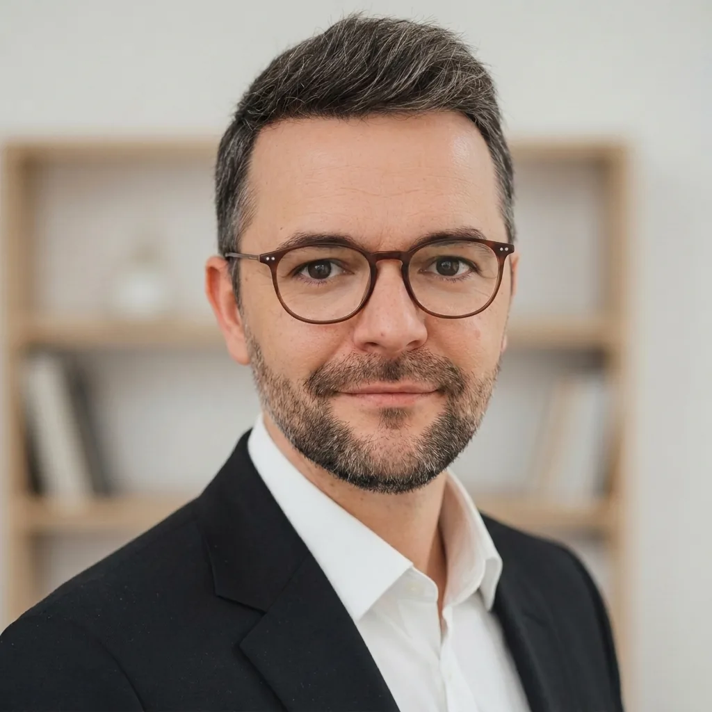

Strategie & comunicare
Poziționare, direcție narativă, comunicare pentru lideri și mesaje care susțin deciziile.

Consultanță de strategie și produs, coordonată de un expert
Gândire clară și livrare pe măsură. Pentru cei care construiesc ceva ce trebuie să funcționeze bine în lumea reală.

Promisiunea
Nu recomandări care se pierd într-un PowerPoint. Decizii clare și talentul care le aduce la viață.
Ce face ALFable
Lucrez la granița dintre discernământ, limbaj, tehnologie și execuție. Ajut echipele să decidă ce contează, apoi construiesc alături de ele.
Poziționare, direcție narativă, comunicare pentru lideri și mesaje care susțin deciziile.
Fluxuri AI aplicate, asistenți personalizați și automatizări care reduc munca repetitivă, nu doar dau impresia de activitate.
Site-uri, aplicații și produse digitale concepute și construite pentru oamenii care le folosesc zi de zi.
Identitate de brand, sisteme de conținut, social media, PR și mesaje care fac munca ușor de înțeles și de apreciat.
Proiecte selectate
De la un instrument privat pentru publicare, la website-uri cu un punct de vedere mai clar. O selecție de proiecte deja în lume.
Un seif offline și privat pentru cărțile autorilor independenți. Fără cont în cloud, fără citire AI, fără urmărire.
Un univers conceput pentru ca o lume originală să fie ușor de descoperit, coerentă și vie.
Acum disponibilă în App Store.
Prezență online pentru un atelier de croitorie artizanală din București.
Prezență digitală pentru un cabinet de psihoterapie și suport psihologic.
Ce spun oamenii
Fragmente selectate și anonimizate din recomandări LinkedIn.
„Alex are o aptitudine intuitivă pentru comunicarea eficientă, în orice domeniu. Capacitatea lui de a înțelege rapid tehnologia și valoarea de bază, apoi de a construi mesajul potrivit pentru public, a fost remarcabilă.”
„O adevărată forță de cunoaștere, cu o înțelegere amplă a peisajului media și idei excelente. O plăcere absolută să lucrezi cu el.”
„Are capacitatea de a lua ideile tale și de a le face să arate foarte profesionist, oferind în același timp ghidaj excelent într-un proiect.”
„Alex combină un stil cald și profesionist cu execuție rapidă, scriitură foarte bună și o înțelegere clară a afacerii și obiectivelor clientului.”
Despre Alexandru
23+ aniSunt Alexandru Filip: lider de comunicare, strateg de narațiune și builder. Am condus comunicarea europeană și globală în organizații complexe, apoi m-am apropiat de munca propriu-zisă, ajutând echipe ambițioase să ia decizii clare și să livreze lucruri utile.
Aduc discernământul strategic al unui lider senior de comunicare și fluența practică necesară pentru ca un site, un sistem de conținut, un flux AI sau un produs să fie coerente din interior spre exterior.
Următorul lucru util
Spune-mi ce trebuie să devină mai clar, mai util sau mai real. Îți răspund personal.